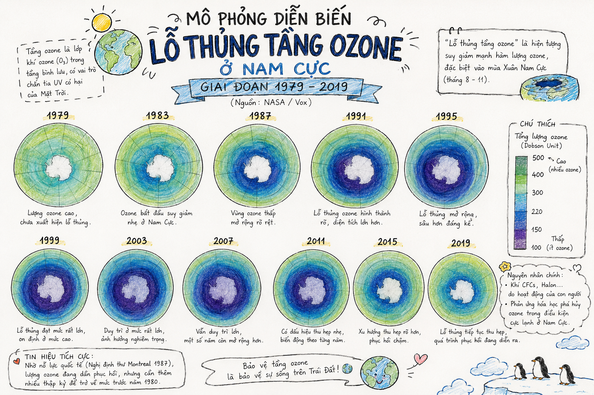

• Bạn có hay theo dõi tin tức không? Bạn thường theo dõi tin tức trên những kênh truyền thông nào và quan tâm đến những gì khi tiếp nhận tin tức?
• Bạn biết gì về tầng ozone và đã bao giờ nghe về việc tầng ozone bị thủng?
📌 ĐỊNH NGHĨA & VAI TRÒ BẢO VỆ:
Tầng ozone nằm ở độ cao khoảng \(15 - 40\text{ km}\) so với bề mặt Trái Đất, thuộc tầng bình lưu. Nó đóng vai trò như một lớp "kem chống nắng" khổng lồ che chắn cho toàn bộ hành tinh khỏi các tia cực tím (UV) độc hại từ Mặt Trời, đặc biệt là tia UV-B (nguyên nhân gây cháy nắng, ung thư da và suy giảm hệ miễn dịch).
Vào những năm 1970, các nhà khoa học nhận thấy tầng ozone đường như đang mỏng đi. Hai nhà nghiên cứu Ma-ri-ô Mô-li-nơ (Mario Molina) và Se-ri Rao-lân (Sherry Rowland) đã xác định "nghi phạm" chính là các hợp chất nhân tạo chlorofluorocarbon (CFC) - vốn được sử dụng rộng rãi làm chất làm lạnh trong tủ lạnh, máy lạnh và bình xịt sơn.
CFC ổn định ở tầng đối lưu nhưng khi bay lên tầng bình lưu, dưới tác động của tia UV, nguyên tử \(\text{Cl}\) bị tách ra và phản ứng dây chuyền phân hủy \(\text{O}_3\) thành \(\text{O}_2\):
*Lưu ý: Mối liên kết phản ứng đạt trạng thái cân bằng \(\xrightleftharpoons{}\), trong đó một nguyên tử \(\text{Cl}\) tự do có thể phá hủy hàng trăm nghìn phân tử \(\text{O}_3\) trước khi bị triệt tiêu!

Hình 1: Mô phỏng diễn biến lỗ thủng tầng ozone ở Nam Cực giai đoạn 1979 - 2019 (Nguồn: NASA / Vox)
Năm 1986, nhà hóa học Xu-dẫn Xó-lo-mon đã dẫn đầu đoàn thám hiểm Nam Cực để đo đạc thực địa. Nhóm của bà đã phát hiện ra điều gì về nồng độ \(\text{ClO}\)?
📜 GIÁ TRỊ VÀ CỘT MỐC LỊCH SỬ:
Theo Chương trình Môi trường Liên hợp quốc (UNEP), khoảng 99% các chất làm suy giảm tầng ozone đã bị "khai tử". Nhờ đó, lá chắn chống nắng của Trái Đất đang dần hồi phục.
Giải thưởng Tương lai Sự sống (Future of Life Award) năm 2021 đã vinh danh ba nhân vật quan trọng: Giô-dép Pha-mơn, Xu-dẫn Xó-lo-mon và Xti-phân An-đơ-son. Trước đó, năm 1995, giải Nobel Hóa học đã được trao cho Ma-ri-ô Mô-li-nơ, Se-ri Rao-lân và Pô-lơ Cơ-rớt-dân (Paul Crutzen) cho những khám phá nền tảng về hóa học khí quyển.
Vận dụng bài học từ sự phục hồi tầng ozone vào cuộc đấu tranh chống biến đổi khí hậu hiện nay. Thông qua việc thay đổi thói quen tiêu dùng, hạn chế đồ nhựa một lần, ưu tiên các thiết bị tiết kiệm năng lượng và ủng hộ các chính sách xanh toàn cầu.
Việc phục hồi tầng ozone là một tiến trình dài hạn diễn ra trong nhiều thập kỷ. Dù sản lượng CFC đã giảm mạnh nhưng các phân tử CFC cũ vẫn còn tồn tại trong khí quyển. Do đó, cộng đồng quốc tế tuyệt đối không được lơ là công tác giám sát.
Nội dung đoạn văn mẫu (Kết nối đọc - viết):
"Bài học từ thành công phục hồi tầng ozone cho thấy sức mạnh to lớn của sự đoàn kết toàn cầu trước khủng hoảng sinh thái. Hôm nay, nhân loại đang đối mặt với một mối đe dọa khác không kém phần nghiêm trọng: ô nhiễm rác thải nhựa. Để giải quyết bài toán này, cắt giảm cá nhân là chưa đủ; thế giới cần một hiệp định toàn cầu ràng buộc pháp lý tương tự Nghị định thư Mông-tơ-re-an. Các quốc gia phải thống nhất lộ trình cấm nhựa sử dụng một lần, bắt buộc áp dụng công nghệ vật liệu sinh học tái tạo và đánh thuế nặng vào hành vi phát thải nhựa. Chỉ khi khoa học, chính phủ và người tiêu dùng cùng đồng lòng hành động, hành tinh mới có thể thực sự xanh trở lại."
Lời giải chi tiết:
1. Tính khối lượng mol của \(\text{CF}_2\text{Cl}_2\):
\(M = 12 + (19 \times 2) + (35.5 \times 2) = 121\text{ g/mol}\)
2. Số mol \(\text{CF}_2\text{Cl}_2\) là:
\(n_{\text{CFC-12}} = \dfrac{242}{121} = 2\text{ mol}\)
3. Trong 1 mol \(\text{CF}_2\text{Cl}_2\) có 2 mol nguyên tử \(\text{Cl}\). Vậy số mol \(\text{Cl}\) giải phóng là:
\(n_{\text{Cl}} = 2 \times 2 = 4\text{ mol}\)
4. Khối lượng nguyên tử \(\text{Cl}\) tạo thành là:
\(m_{\text{Cl}} = 4 \times 35.5 = 142\text{ g}\)
Lời giải chi tiết:
1. Từ Bài 1, số mol nguyên tử \(\text{Cl}\) giải phóng là \(n_{\text{Cl}} = 4\text{ mol}\).
2. Số nguyên tử \(\text{Cl}\) tương ứng là:
\(N_{\text{Cl}} = 4 \times 6.022 \times 10^{23} = 2.4088 \times 10^{24}\text{ nguyên tử}\)
3. Số phân tử \(\text{O}_3\) bị phân hủy là:
\(N_{\text{O}_3} = 2.4088 \times 10^{24} \times 10^5 = 2.4088 \times 10^{29}\text{ phân tử}\)
*Kết luận: Chỉ với 242g khí CFC đã có khả năng phá hủy hàng trăm nghìn tỷ tỷ phân tử ozone trong khí quyển!*
Lời giải chi tiết:
1. Gọi \(t\) là số năm tính từ năm 2020 (\(t = 0\) ứng với năm 2020).
2. Phương trình biểu diễn diện tích lỗ thủng \(S(t)\) (đơn vị: triệu \(\text{km}^2\)):
\(S(t) = 24.8 - 0.62 \times t\)
3. Để lỗ thủng đóng lại hoàn toàn, ta cho \(S(t) = 0\):
\(24.8 - 0.62 \times t = 0 \implies t = \dfrac{24.8}{0.62} = 40\text{ năm}\)
4. Năm hoàn thành phục hồi sẽ là:
\(\text{Năm} = 2020 + 40 = 2060\)
*Kết quả trùng khớp với dự báo chính thức của Chương trình Môi trường Liên hợp quốc (UNEP).*